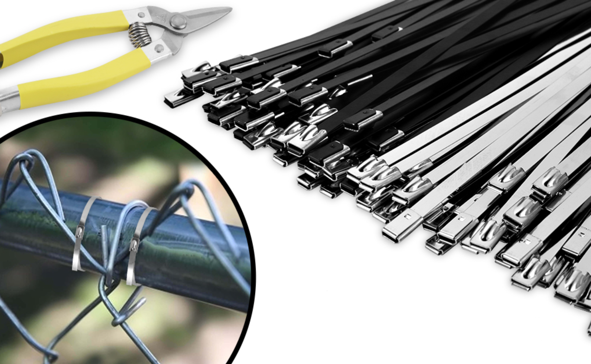

2024-02-20
Stainless Steel Cable Ties in Offshore & Marine Applications

Offshore platforms and marine vessels operate in extremely harsh environments. High salt spray, humidity and UV exposure place severe demands on material corrosion resistance. Stainless steel cable ties, with their excellent corrosion resistance and mechanical strength, are the preferred choice for cable bundling in marine engineering.
Why Stainless Steel Ties?
1. Corrosion Resistance: 316 stainless steel performs excellently in salt spray environments
2. High Temperature: Operates from -80°C to 538°C
3. UV Resistance: Will not degrade or become brittle from UV exposure
4. Long Lifespan: Design life of 20+ years
Applications
- Offshore platform cable securing
- Marine vessel electrical wiring
- Port equipment installation
- Offshore wind farm maintenance